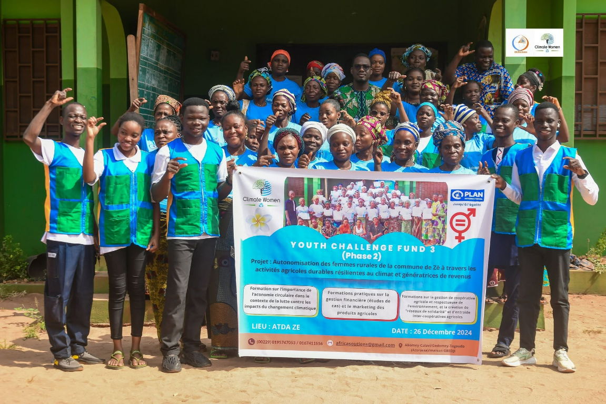

Jeunesse & climat
Youth Challenge Fund – Phase 2
Autonomisation des femmes rurales de la commune de Zè à travers des activités agricoles durables et la création de revenus.
- Localité : Zè
- Impact : formation, sensibilisation et entrepreneuriat vert